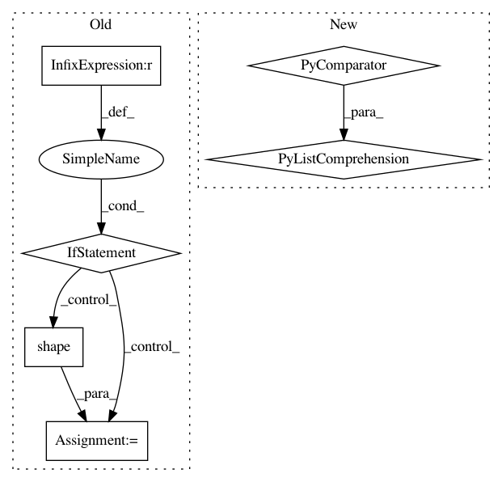

dca76ad8ebe547f400682f09e27d497254905d1d,models/official/detection/serving/inputs.py,,raw_image_tensor_input,#Any#Any#Any#,59
Before Change
images_info = tf.constant([image_info_per_image], dtype=tf.float32)
else:
images_info = tf.constant([image_info_per_image], dtype=tf.float32)
if batch_size is None:
batch_size = tf.shape(placeholder)[0]
images_info = tf.tile(images_info, [batch_size, 1, 1])
images = placeholder
return placeholder, {"images": images, "image_info": images_info}
After Change
images_info = tf.constant([image_info_per_image], dtype=tf.float32)
else:
images_info = tf.constant(
[image_info_per_image for _ in range(batch_size)],
dtype=tf.float32)
images = placeholder
In pattern: SUPERPATTERN
Frequency: 3
Non-data size: 6
Instances
Project Name: tensorflow/tpu
Commit Name: dca76ad8ebe547f400682f09e27d497254905d1d
Time: 2020-06-15
Author: pengchong@google.com
File Name: models/official/detection/serving/inputs.py
Class Name:
Method Name: raw_image_tensor_input
Project Name: GPflow/GPflow
Commit Name: bd1e9c04b48dd5ccca9619d5eaa2595a358bdb08
Time: 2020-01-31
Author: st--@users.noreply.github.com
File Name: gpflow/kernels/statics.py
Class Name: White
Method Name: K
Project Name: pymc-devs/pymc3
Commit Name: 5b2766aae94c0615aef2c8d6ac178428e6d28745
Time: 2008-07-20
Author: fonnesbeck@15d7aa0b-6f1a-0410-991a-d59f85d14984
File Name: pymc/database/mysql.py
Class Name: Trace
Method Name: tally